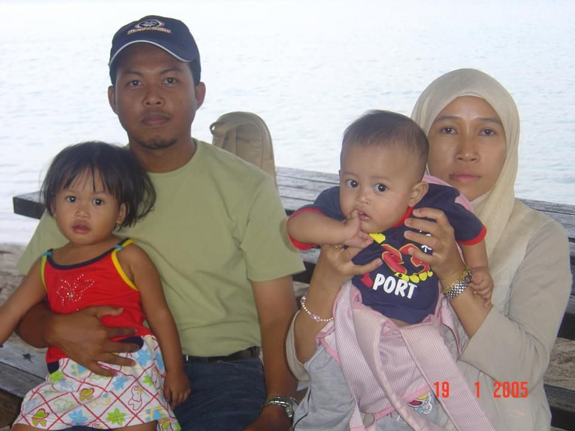
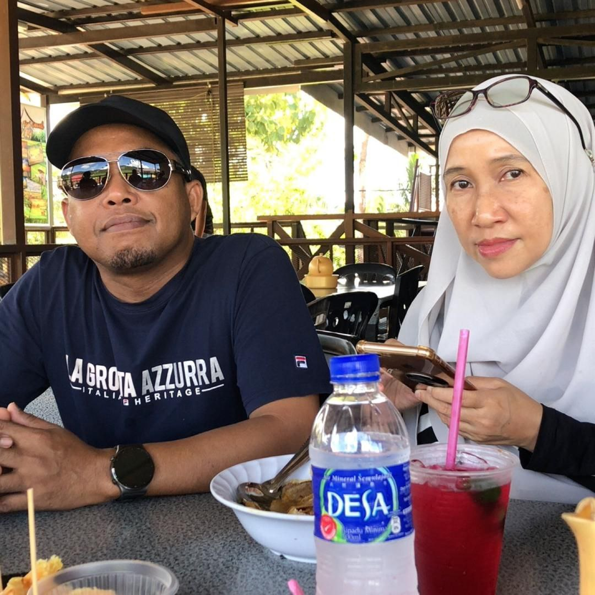
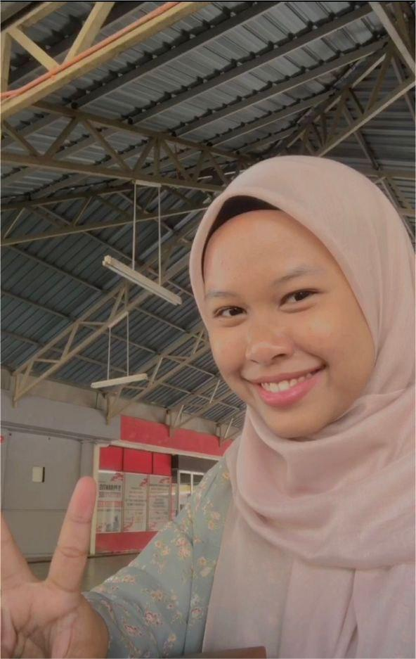
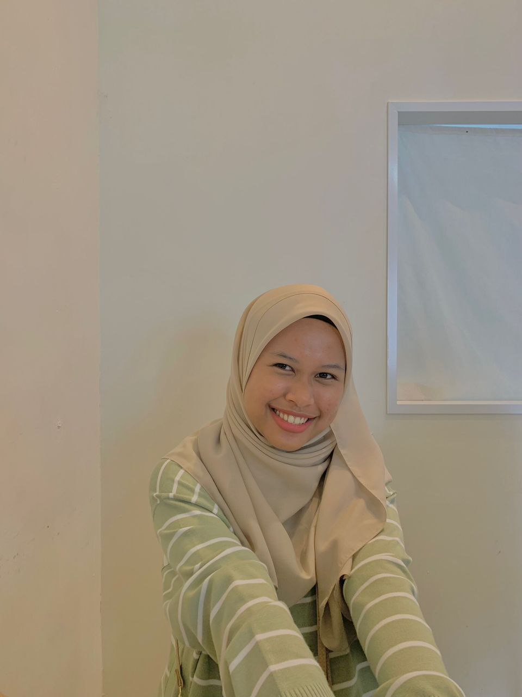

 
Here are my parents. My father's name is Mohd. Yusaini bin Yaacob, he was born in 1972 in Kelantan. He works as a plan engineer in TUDM. 
My one and only sibling is my older sister. Her name is Nur Ariqah Sofia, she was born in 2003. Even though she is my older sister,
it feels like we're twins. We share a lot of similarities with eachother. We get along very well since little. She's my adventure partner
as we go out everywhere with eachother. She's also my mentor as she taught me so many things in life. She is a very reliable older
sister and I respect her.